Variables
First thing we have to do. Let's create Saflet.
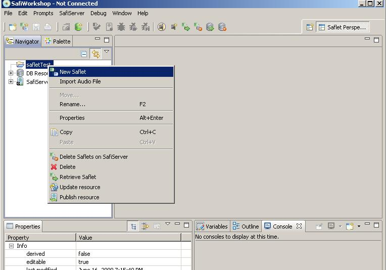
We will choose custom Initiator template. So we can invoke saflet
without actual call.
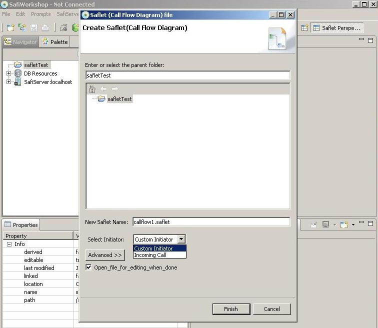
Current Variable
Variable can be created through variables view. There are
three
types of variable. They are runtime, current and global.
runtime variables are variables internal to telephony system.
In
saflet, you will mostly deal with current and global variables. Let's
create current variable.
Current variable exists in saflet execution time. It will be
initialized with value you assigned as a initial value. Current
variable is accessible to all the actionstep within composing saflet.
Let's create saflet variable. In dialog you will be able to assign
variable name, type and initial value.
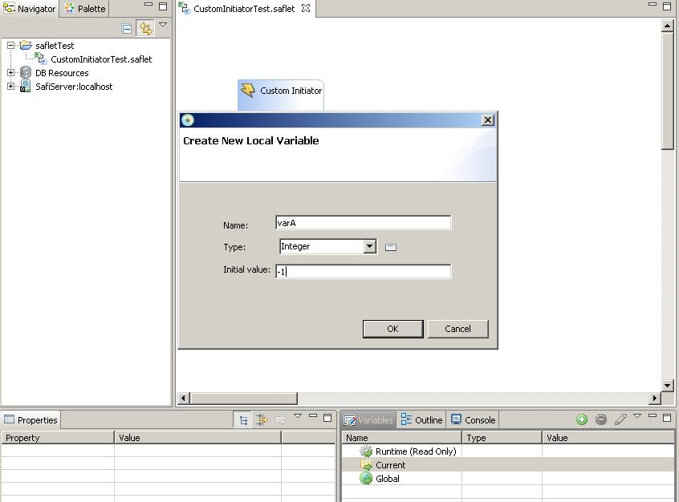
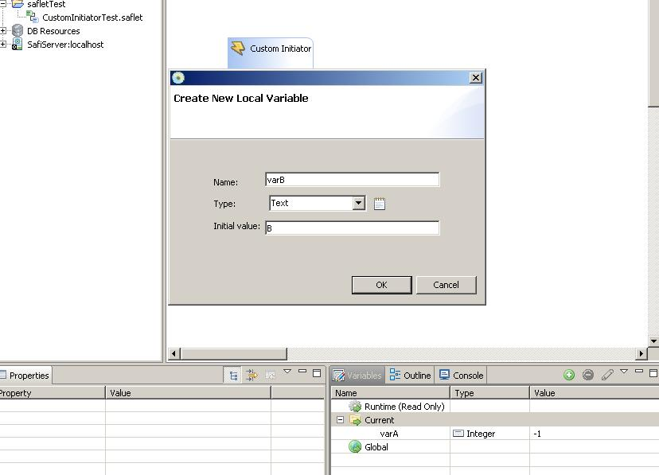
Created variables should appear in variables view.
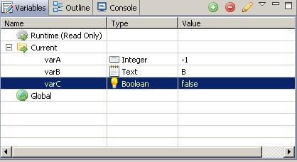
Global
Variable
Now, let's create global variable. In order to create global variable,
you need to login into Safiserver. Global variables exist in Safiserver.
Within logged in Safiserver, global variables are accessible to all
the saflet and action steps.
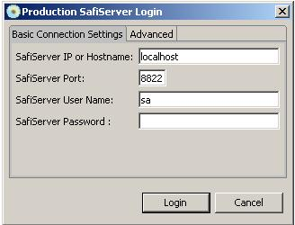
Once user logged in Safiserver, user should be able to create global
variable.
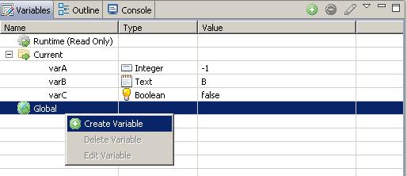
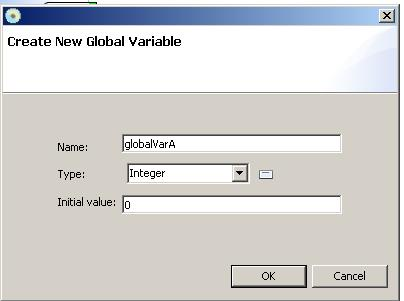
global variable also should show up in variables view (if user logged
in server)
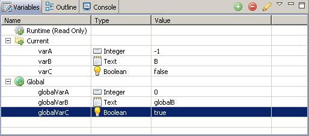
Variable Assignment
Actionstep.
It is time to assign some value into variable. From actionstep palette,
select assignment actionstep and place into saflet.
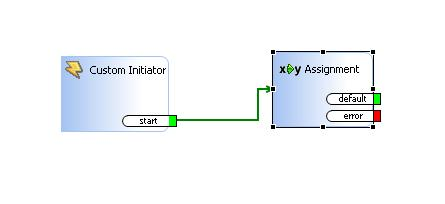
double clicking actionstep should bring up Assignment actionstep
dialog. Each action step should associated actionstep dialog.
User should be able to edit property of each action step through
actionstep dialog.
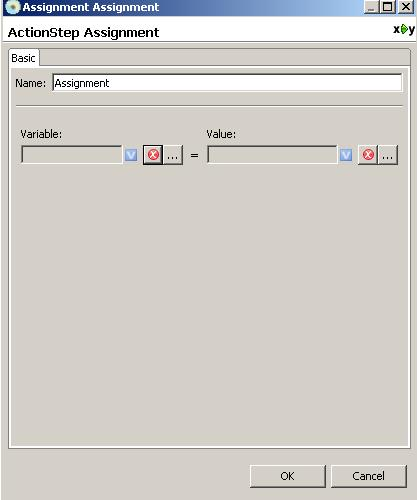
Click left side of Variable. Select a variable we want to modify.
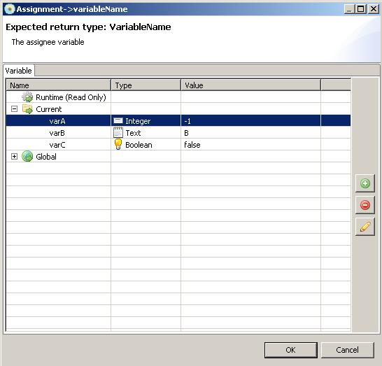
After selecting variable, select value you want to assign to variable.
User can select variable. then value of that variable will be
assigned.
Also user can use script and assign value with script. here we select
global variable value to be assigned to current variable.
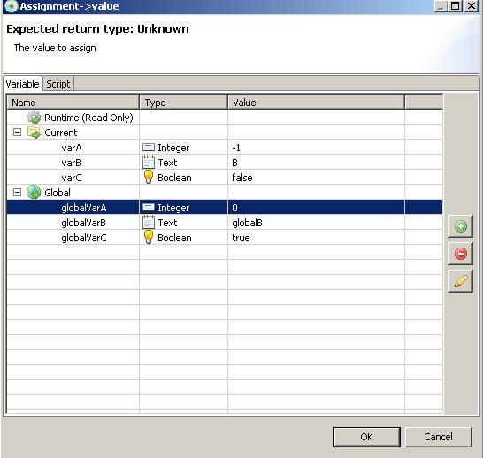
After selecting global variable, you should see variable assignment in
assignment dialog.
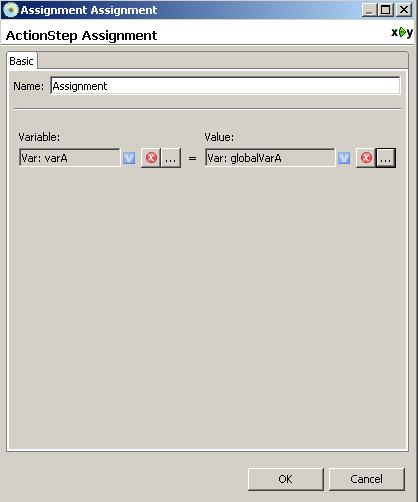
For debugging purpose, let's add some Debuglog actionsteps in saflet.
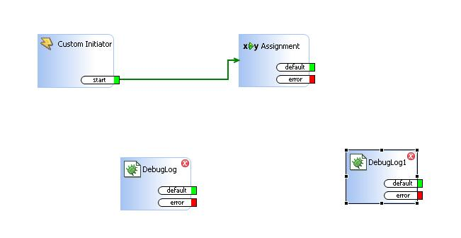
By dragging arrow, you should be able to change the execution flow of
saflet.
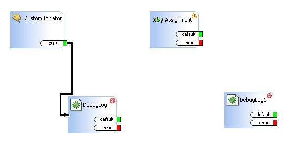
double clicking Debuglog actionstep will bring up actionstep dialog.
The variable we are interested in is varA and select varA
from message field.
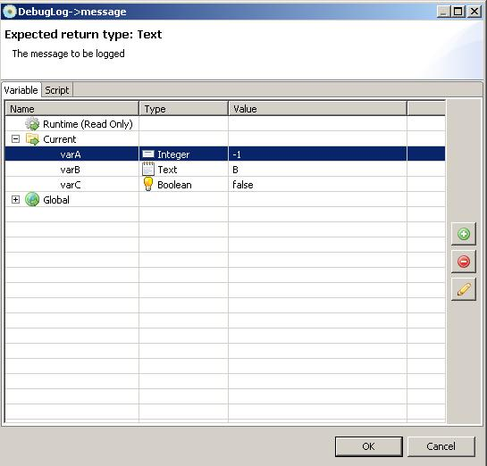
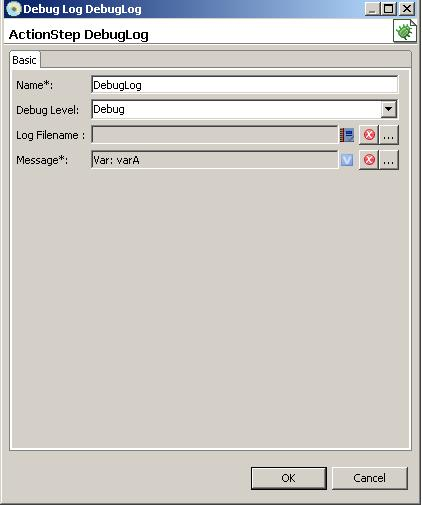
make second Debuglog actionstep keep track of variable and change
actionstep flow of saflet.
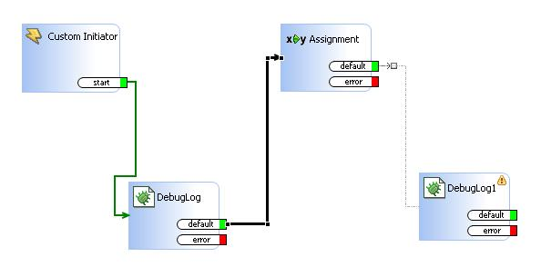
It is time to test saflet we built. select debug current saflet (User
should be connected with Safiserver)
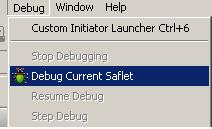
You will be prompted to publish modified saflet into Safiserver.
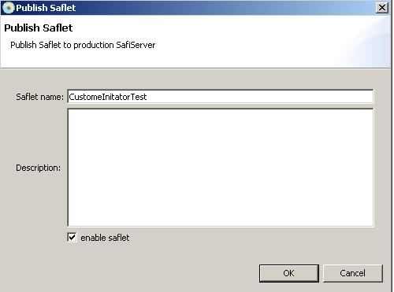
Once debugging mode starts, it will launch debug saflet. Debugging
saflet has pink background.
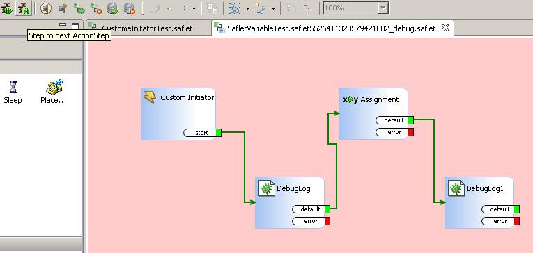
Now it is time to invoke saflet. Bring up Custom Initiator Launcher.
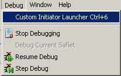
In custom initiator client dialog, specify saflet you want to invoke
and click send button.
This will invoke custom initiator event in Safiserver and will invoke
saflet you specified.
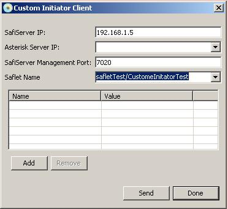
By clicking step debugging button, you should be able to execute each
actionstep step by step.
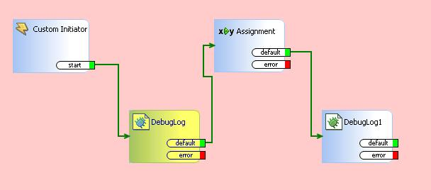
In execution of DebugLog action step, you should be able to see
returned value of that action step in console view.
Since we are keep track of variable. Returned value is value
of variable.
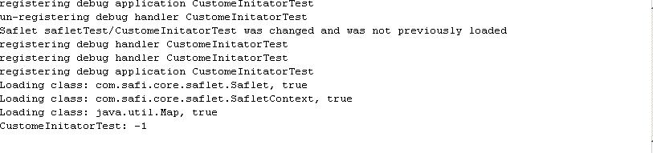
Also, you should be able to see how variable changes in debugging
variables view. As we can see variable is assigned to new value after
assignment action step execution.
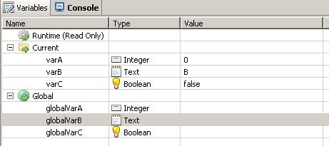
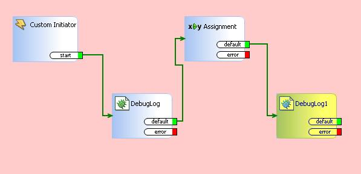
We can verify that after executing second debuglog actionstep. you will
see new value is returned in console view.

After completing debug, background of debugging saflet will
turn into gray color.
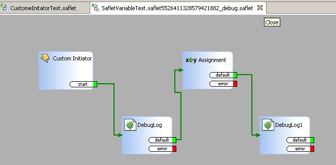
You can simply close debugging saflet.
Current variable will be reinitialized whenever saflet executes with
user specified initial value.
However, global variable if it is changed during execution. It will
stay as changed value.
Change assignment step so that we assign value of current variable to
global variable.
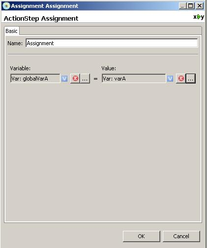
Before saflet execution, variable values are
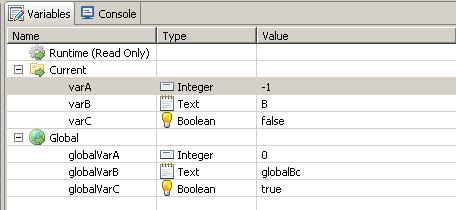
After execution of assignment actionstep, global variable will be
changed permanently and stay changed.
Since global variable is database persisted value, it will stay
eventhough server restarts.
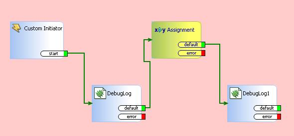
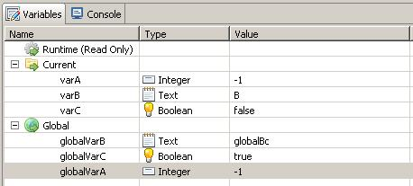
another way to assign value to variable is to use javascript.
In assignment actionstep, if you bring up variable chooser
view in value assignment,
you should be able to access script tab. you can write a simple
javascript like below. In javascript, we are generating random value
and returning random value.
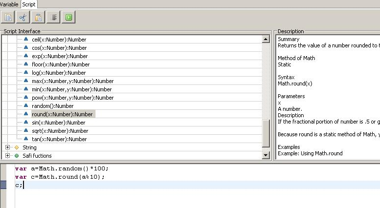
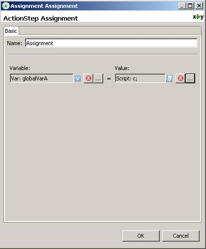
After execution of saflet, you should be able to see assigned random
value in global variable.
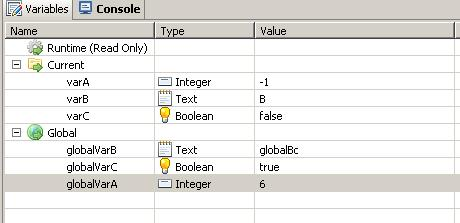